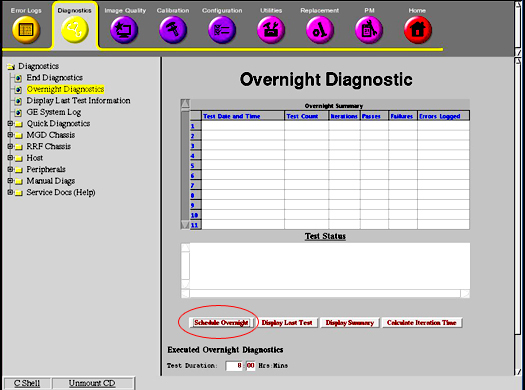

Operating Documentation
Direction 5133330-3, Rev# 14
Signa EXCITE HD 3.0T Service Methods
Module Version 1.0, Version Date 5/3/07
Operating Documentation |
| Required Persons | Preliminary Reqs | Procedure | Finalization |
|---|---|---|---|
| 1 | Not Applicable | 5 mins | Not Applicable |
From CSD select Diagnostic menu, then select Overnight Diagnostics. See Illustration 1.
Illustration 1: Starting Overnight Diagnostics Tool

Select Schedule Overnight option at the bottom of the screen. See Illustration 1.
Fill in the necessary information on the GUI for running overnight diagnostics, then select [Submit]. See Illustration 2.
Illustration 2: Scheduling Overnight Diags Screen

Select [Close]. The overnight diagnostics will run at the appointed time.
No finalization steps.